Report name
Match the stated report to the qualification, degree or transcript requested.
CHSI / CSSD · REPORTS & RESOURCES
Understand CHSI/CSSD verification report types, explore real report samples, and find official verification resources for Chinese academic credentials.
Independent information resource. Official reports are issued through the relevant official channels.
Understand CHSI degree verification, CHSI transcript verification, CSSD reports and the role of Chinese academic verification in international education and credential evaluation.
CHSI is commonly used to refer to China’s higher education student information and academic credential verification platform. The official CHSI website maintained by CSSD describes services involving student records, qualification certificates, degree certificates and academic transcripts.
For broader help with degree certificates, transcripts, university records, WES and overseas use, use the China Academic Document Guides hub. Use this page to compare CHSI/CSSD report types and identify the relevant official route.
A CHSI verification report presents verified academic information in a format that can be checked through the issuing platform. Available report types and application requirements depend on the academic record and the current platform options.
For a complete overview of Chinese academic document certification, read our China Degree Certification Guide.
CHSI and CSSD services and instructions may change. Applicants should use the official platform pages linked above for current report and account requirements.
CSSD is the English name used by the Center for Student Services and Development. Its official verification-service overview describes services concerning higher-education qualification certificates, student records and college transcripts. In international instructions, CHSI and CSSD may appear in connection with academic verification reports, platform services or document submission routes. Applicants should follow the terminology and report type stated by the receiving authority.
Graduates who need to verify a China degree certificate, graduation certificate or transcript for overseas use.
Applicants preparing verified academic documents for WES, ECA or other credential evaluation agencies.
Institutions checking whether a CHSI or CSSD report supports a Chinese academic credential.
People who may need academic documents verified before a separate notarization, apostille or legalization process.
Different records answer different questions. Compare the report categories before choosing an application route.
The official CSSD verification-report overview lists separate report categories for higher-education qualification certificates, degree certificates and academic transcripts. Availability, application route and language options depend on the record and current platform service.
The samples below include transcript verification reports, degree online verification reports and original transcript examples in Chinese and English. They are provided for general reference and do not replace current official requirements.
An English CSSD report is separate from the university transcript itself. If the source record needs an English version, review the options for preparing a Chinese transcript in English before selecting the verification and delivery route.
If the underlying university transcript is not yet available, first review how to obtain an old Chinese university transcript after graduation before selecting the applicable CSSD verification route.
Confirms degree information recorded for a Chinese higher education qualification, subject to the records and report options available through the platform.
Confirms graduation credential information and should not be treated as interchangeable with a degree verification report.
Checks academic transcript information such as courses, grades, credits, study dates and the issuing institution.
View transcript report examples →Online verification reports may cover eligible student-status, qualification or degree records. This is a report route rather than a separate academic credential type; transcript verification follows its own applicable process.
Compare the online degree examples →Explore permanently redacted examples in Chinese and English. Several images are different pages or language versions of the same document set, not nine separate report types.
Sample for reference only. Personal information and traceable identifiers have been permanently redacted. Actual reports and requirements may vary.
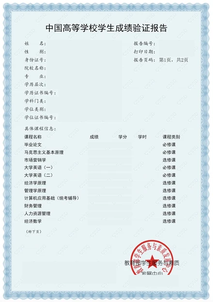
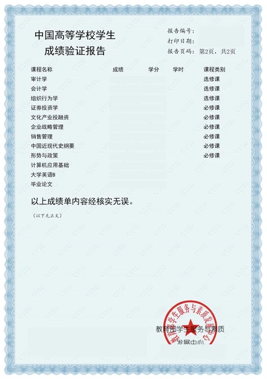
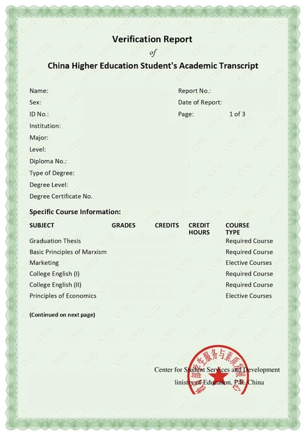
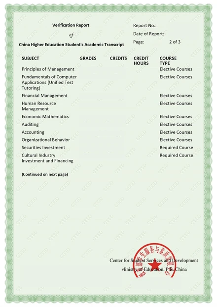
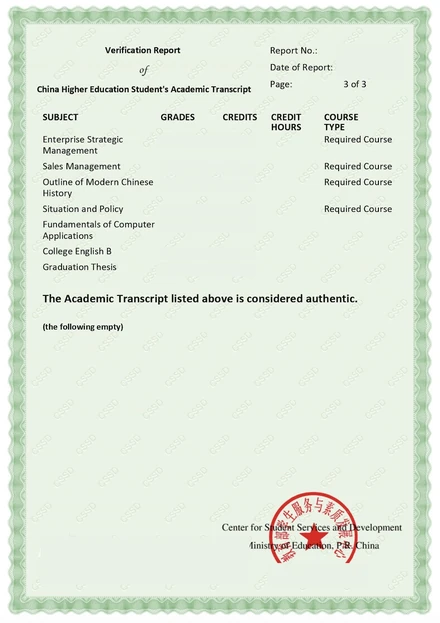
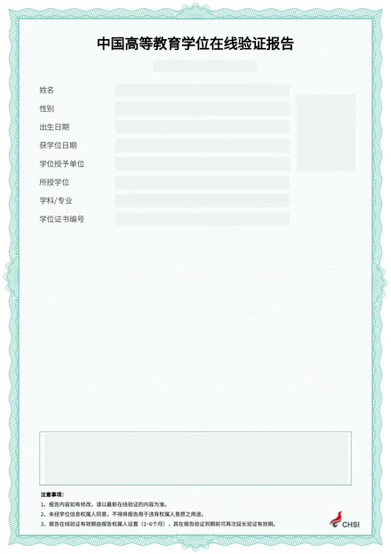
Official document title: 中国高等教育学位在线验证报告.
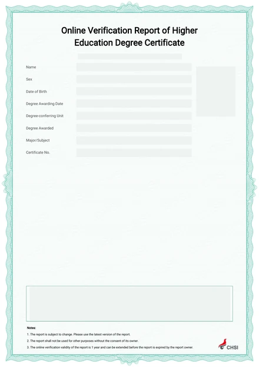
Official document title: Online Verification Report of Higher Education Degree Certificate.
These are higher education qualification certificate reports, distinct from degree verification reports. The English document is titled Online Verification Report of Higher Education Qualification Certificate.
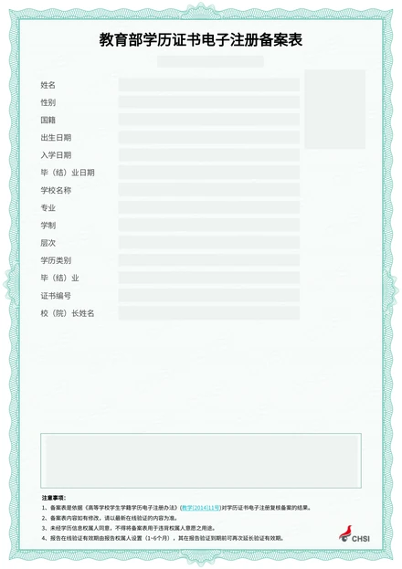
Official document title: 教育部学历证书电子注册备案表.
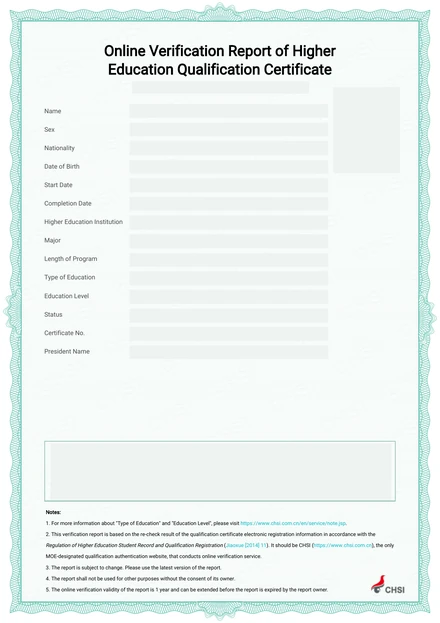
Official document title: Online Verification Report of Higher Education Qualification Certificate.
These are source academic records and a translation, not CHSI/CSSD verification reports.
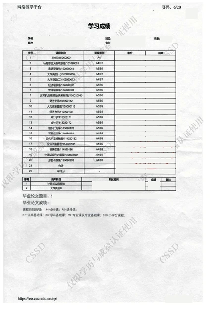
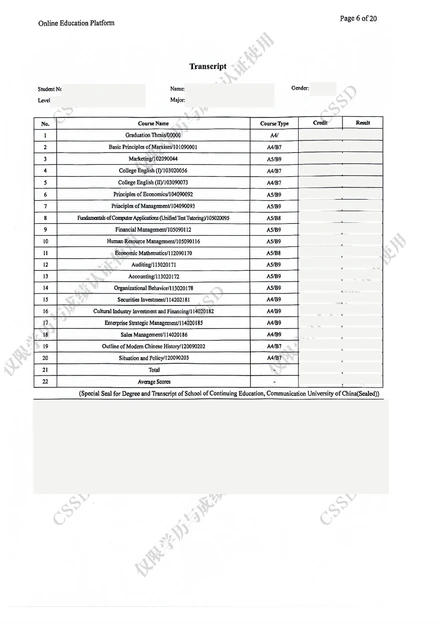
Identify the required report, confirm the official channel, obtain and review the report, then follow the receiving institution’s submission requirements.
Application: requesting an official report through the applicable platform route.
Verification: checking an issued report using its applicable official verification service.
Optional assistance: Global Attest can help review available records and requirements; it does not issue official verification reports.
A report number, online verification code or other function may allow the receiving party to check a report, depending on the report format and current platform service. Use the official CSSD report-checking page for the report categories it supports.
Match the stated report to the qualification, degree or transcript requested.
Check the record concerned and the information presented by the issuing platform.
Confirm the accepted language. A translated university transcript is not an English CSSD report.
Use the applicable official channel. Codes and QR data are removed from these public samples.
Where applicable, check the report’s verification period and current status; there is no single rule for every report.
Check the exact document, recency and sender or delivery method requested by the receiving institution.
Degree verification, graduation certificate verification and academic transcript verification address different records. A degree report concerns the academic degree awarded, a graduation report concerns completion of the academic program, and a transcript report concerns the detailed study record. A receiving organization may request one or several of these reports.
If the original graduation or degree certificate has been lost, first review how to request replacement proof from the Chinese university before determining the applicable CHSI/CSSD verification route.
If you cannot contact the Chinese university, a transcript or qualification record is missing, historical passport, name or student-number details do not match, the recipient requests additional university confirmation, or China-side coordination is needed, review our China degree and transcript verification support. Global Attest cannot control a CHSI/CSSD account, alter an official record or guarantee a university, platform or recipient outcome.
A recipient may request a specified CHSI or CSSD verification report rather than relying only on a scanned diploma.
Some agencies require English reports, while others may accept Chinese reports with a translation that meets their requirements.
The official CHSI online-verification service overview describes validity and extension for certain online verification reports. Other report types may be handled differently. Use the CHSI verification report extension guide to identify what can be extended and when a different route may be needed.
Degree verification and transcript verification are different documents, and the recipient decides whether one or both are required.
Use the focused guides for the issue you actually face. Older records and university-held source data may require a different route.
Troubleshoot missing degree or graduation records, old-passport identity, account binding and university source-data issues.
Diagnose historical passport, current identity, name-format and record-binding differences when the academic record appears to exist.
Troubleshoot WES requests involving Chinese degree, graduation, transcript, CSSD/CHSI verification, identity and submission-route issues.
Check whether WES actually requires university action, CSSD delivery, institution verification or another approved transcript route.
Read the university and WES transcript troubleshooting guide.
CHSI or CSSD reports may be requested for overseas university admission, credential evaluation, immigration, employment, professional licensing or other academic recognition purposes. Requirements are set by the receiving institution or authority, so applicants should confirm the required report type, language, validity and delivery method before applying.
China degree and transcript verification is commonly used for applications connected to destinations including but not limited to:
WES may require verified Chinese academic records as part of its credential evaluation process. The documents and submission route depend on the credential and the instructions shown for the applicant’s case. A CHSI or CSSD report supports document verification, but WES independently reviews the submitted credentials and determines the final evaluation result.
If you are preparing documents for WES, read our WES Certification Guide for China Degrees.
For optional help with WES-specific document preparation and coordination, explore WES credential evaluation assistance.
CHSI is commonly used to describe China’s higher education student information and academic credential verification platform. It provides access to certain education records and online verification reports for Chinese degrees, graduation credentials and academic transcripts. Universities, credential evaluators, employers and other overseas authorities may use these reports to check submitted academic information. Available services and report formats depend on the record type and current official platform options.
CHSI is the widely recognized name associated with China’s higher education information website and verification platform. CSSD is the English name used for the student services and development center connected with academic verification services. International agencies may refer to either term in their instructions. Applicants should follow the exact report type and submission method requested rather than assuming that every CHSI or CSSD document serves the same purpose.
Depending on the available official records and platform services, verification may cover Chinese degree certificates, graduation certificates and academic transcripts. Degree, graduation and transcript reports confirm different parts of an academic history and are not automatically interchangeable. Some reports may be available in Chinese or English and may include online verification details. Applicants should check which document, language and report format the receiving institution requires before submitting an application.
CHSI or CSSD verification is often relevant for Chinese academic credentials submitted to WES, but requirements can vary by credential, education history and the instructions attached to an individual application. Applicants should use the current document checklist in their WES account and follow the specified delivery method. A CHSI verification report confirms academic information; it does not determine the credential equivalency or guarantee the final evaluation issued by WES.
Validity depends on the report type, issue settings and current official platform rules. Some online verification reports display a validity period and may offer an official way to extend or update access, while other reports may be handled differently. Check the date, report number, QR code and online verification status before submission. The receiving institution may also impose its own recency requirements, so applicants should confirm both platform and recipient instructions.
Need help with a CHSI/CSSD report application or Chinese university records? Tell us your institution, credential, graduation year, requested report, any missing records and the recipient's instructions and deadline, if available. You can apply through the official platform yourself. Global Attest offers optional, case-specific paid assistance where feasible; report issuance, university cooperation and recipient acceptance cannot be guaranteed.
Tell us your university, graduation year, document type, and receiving institution's requirements. Global Attest can help review the appropriate verification route.